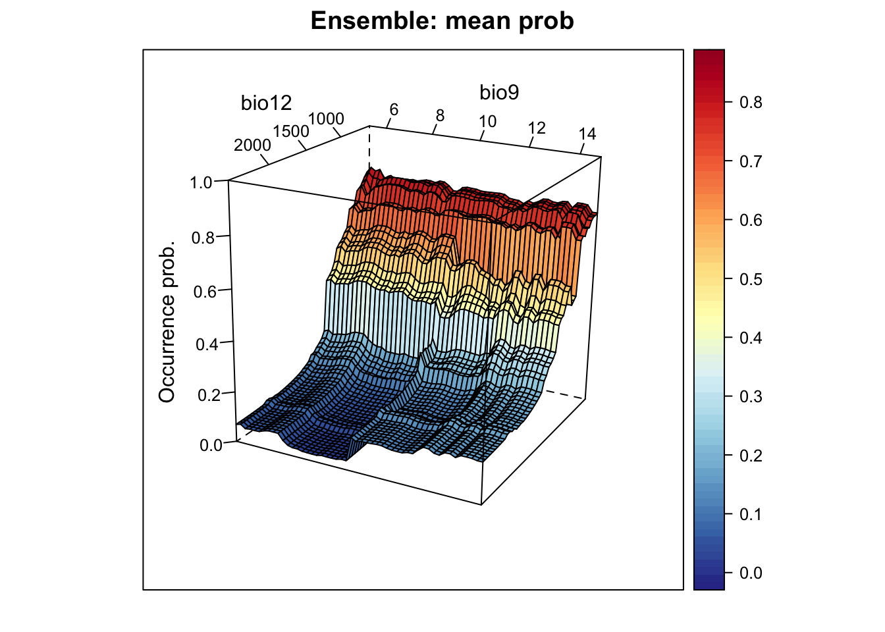
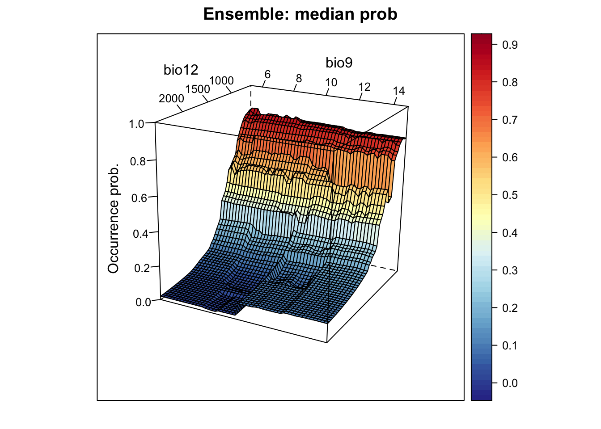
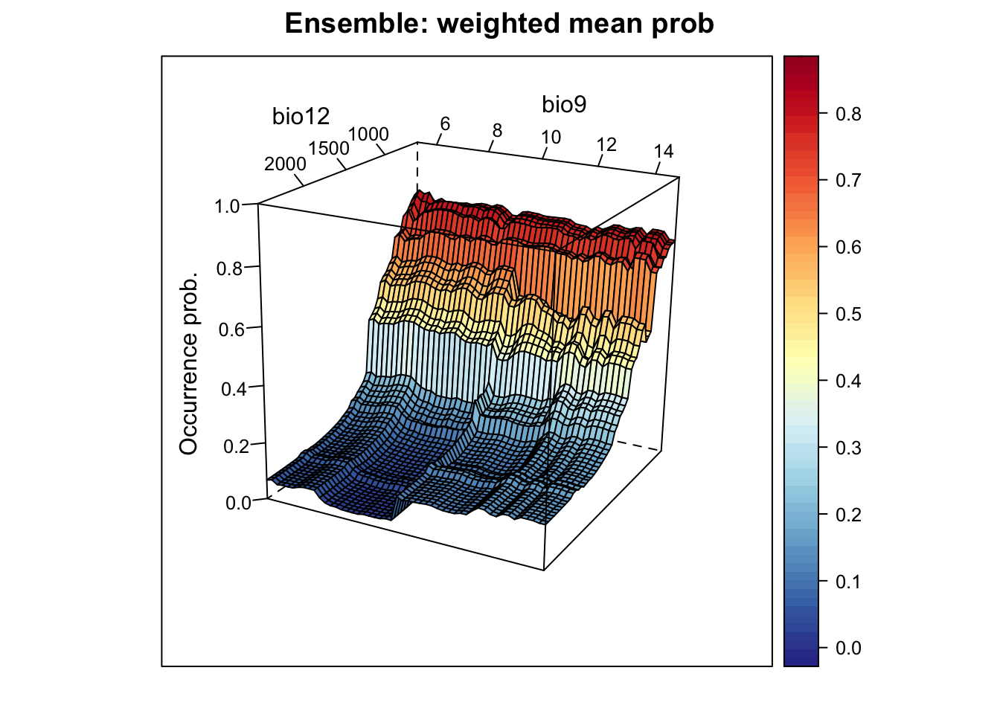
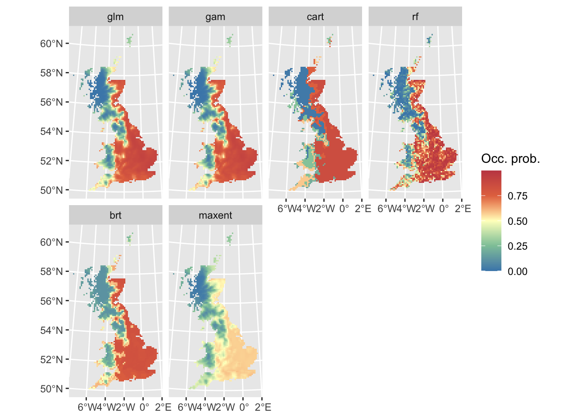
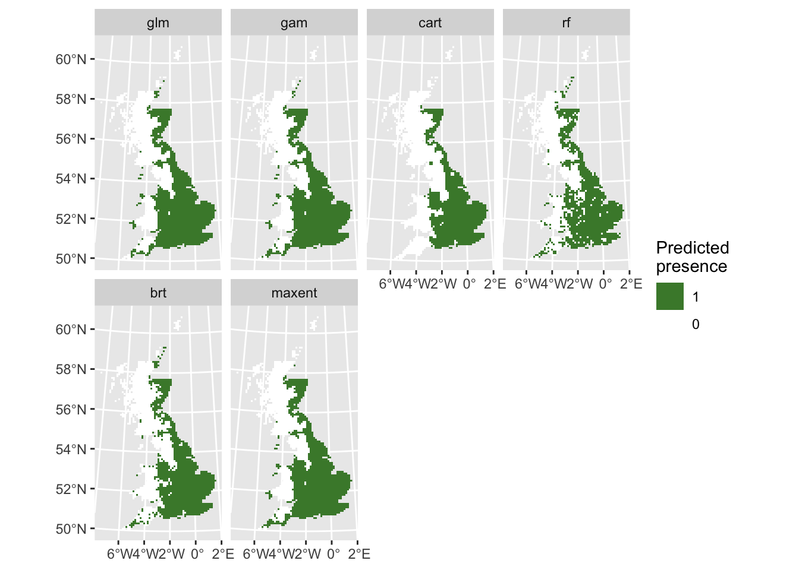
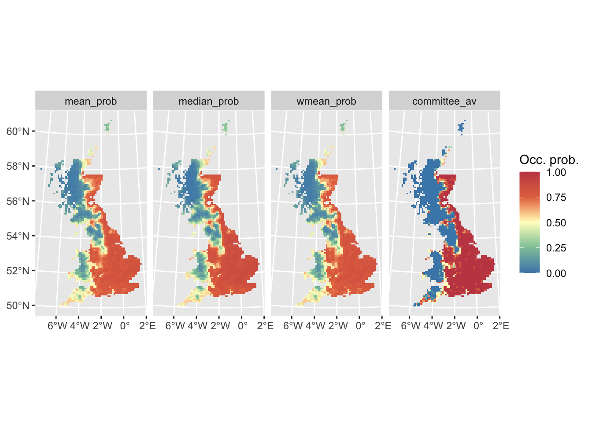
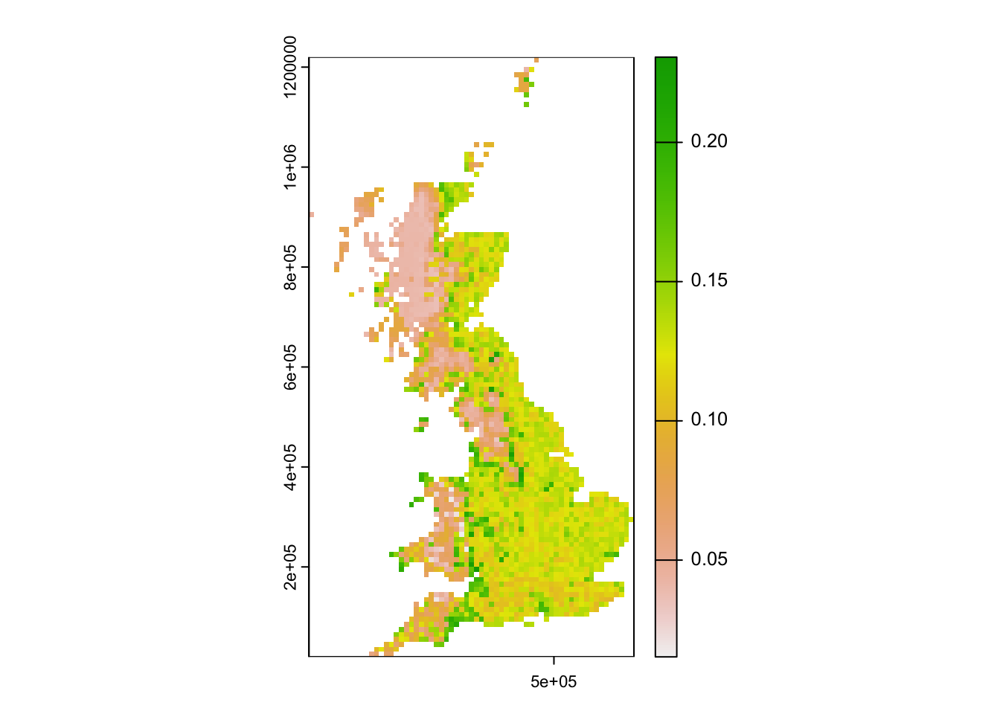

SDM ensembles
RStudio project
Open the RStudio project that we created in the first session. I recommend to use this RStudio project for the entire course and within the RStudio project create separate R scripts for each session.
- Create a new empty R script by going to the tab “File”, select “New File” and then “R script”
- In the new R script, type
# Session b7: SDM ensemblesand save the file in your folder “scripts” within your project folder, e.g. as “b7_SDM_ensembles.R”
1 Introduction
In the previous session, we got to know several SDM algorithms (Elith et al. 2006; Thuiller et al. 2009; Guisan, Thuiller, and Zimmermann 2017). But how do we proceed with all these models now? In the end, it would be handy to just work with a single, general prediction. One way to achive a single prediction would be to select the best performing algorithm. However, we have also seen that different models make different assumptions and extrapolate differently to new environments. A priori, it is difficult to judge which of the algorithms will perform best in new situations. Ensemble models have been introduced as an alternative (Araujo and New 2007). These combine different models and provide information about the overall trend and the uncertainty around this trend (Guisan, Thuiller, and Zimmermann 2017; Thuiller et al. 2019). Sometimes, the term ensembles is used synonymously with model averaging (Dormann et al. 2018) when only different model algorithms are combined. According to Araujo and New (2007), ensembles could also take into account varying initial and boundary conditions (e.g. different data inputs, and different future scenarios).
In ensembles, predictions can be combined or averaged in different ways (Thuiller et al. 2009). Simple averages of predictions are derived using the arithmetic mean or the median. An alternative is to use weighted averages. Here, each model receives a weight derived from information criteria (e.g. AIC) or from predictive performance (e.g. AUC or TSS derived from cross-validation or split-sample approaches). To assess uncertainty in model predictions, we can, for example, calculate the coefficient of variation or standard deviation.
Here, we will concentrate on how different algorithms can be combined into ensemble predictions. This is primarily meant to show you the main workflow. The ensembles can be adopted individually by using less, more or simply other algorithms, by using different parameterisations for the different algorithms, by using different input data (e.g. atlas data vs. range maps), and projections can be made to different scenarios of future (or past) global change.
There is one important note for forecast ensembles. Typically, we would make projections under climate change or land use change for scenarios derived from different climate models or land use models. This captures the uncertainty from different underlying model assumptions. This should not be confused with different storylines (the old SRES storylines or newer RCPs in climate models, or the SSPs in land use models; Vuuren and Carter (2013)). When making projections into the future, we would typically combine ensembles of predictions for different SDM algorithms and different climate and land use models. However, we would not combine projections for different storylines, but would want to analyse the potential pathways separately.
2 Recap of last session: data and model building steps
We will continue to work on the Yellowhammer example of the previous session, using data from the British breeding and wintering birds citizen science atlas (Gillings et al. 2019). The species presense/absence data and the bioclimatic variables at these locations are available from file. Also, we have already tested the data for multicollinearity and identified bio12 and bio9 as most important but weakly correlated variables, and we have run different algorithms.
2.1 Data
library(terra)
bg <- terra::rast('data/Prac3_UK_mask.grd')
sp_dat <- read.table('data/Prac3_YellowHammer.txt',header=T)Previously, we have used a simple split-sample to validate model performance:
# Read the split-sample back in
train_i <- scan('data/indices_traindata.txt')
# Then, we can subset the training and testing data
sp_train <- sp_dat[train_i,]
sp_test <- sp_dat[-train_i,]For making predictions in space, we also load the previously processed raster layers of current climate (see session 4).
bio_curr <- terra::rast('data/Prac4_UK_bio_curr.grd')2.2 Model fitting
In the previous tutorial, we already fitted different model algorithms. Here, we refit them very quickly.
# Our predictors, for simplicity we only use two:
my_preds <- c('bio12', 'bio9')
library(dismo)
# Fit BIOCLIM model - with Raster* object!
m_bc <- bioclim(stack(bio_curr[[my_preds]]),
sp_train[sp_train$Emberiza_citrinella==1,c('EASTING','NORTHING')])
# Fit Domain model - with Raster* object!
m_dom <- domain(stack(bio_curr[[my_preds]]),
sp_train[sp_train$Emberiza_citrinella==1,c('EASTING','NORTHING')])
# Fit generalised linear model (GLM)
m_glm <- step(glm( Emberiza_citrinella ~ bio12 + I(bio12^2) + bio9 + I(bio9^2),
family='binomial', data=sp_train))
# Fit generalised additive model (GAM) with cubic smoothing splines
library(mgcv)
m_gam <- mgcv::gam( Emberiza_citrinella ~ s(bio12, k=4) + s(bio9, k=4),
family='binomial', data=sp_train)
# Fit Maxent
library(maxnet)
m_maxent <- maxnet(p=sp_train$Emberiza_citrinella, data=sp_train[,my_preds],
maxnet.formula(p=sp_train$Emberiza_citrinella, data=sp_train[,my_preds], classes="lh"))
# Fit classification and regression tree (CART)
library(rpart)
m_cart <- rpart( Emberiza_citrinella ~ bio12 + bio9,
data=sp_train, control=rpart.control(minsplit=20,xval=10))
# Fit Random Forest (RF)
library(randomForest)
m_rf <- randomForest( x=sp_train[,my_preds], y=sp_train$Emberiza_citrinella,
ntree=1000, importance =T)
# Fit boosted regression tree (BRT)
library(gbm)
m_brt <- gbm.step(data = sp_train,
gbm.x = my_preds,
gbm.y = 'Emberiza_citrinella',
family = 'bernoulli',
tree.complexity = 2,
bag.fraction = 0.75,
learning.rate = 0.001,
verbose=F,
plot.main=F)2.3 Model assessment
We have already validated model performance on the hold-out test data in last session, and stored the results of the model validation:
# Adapt the file path to your folder structure
(comp_perf <- read.table('data/SDM_alg_performances.txt', header=T))## alg AUC TSS Kappa Sens Spec PCC
## 1 bc 0.7579365 0.4017857 0.4090909 0.5476190 0.8541667 0.7111111
## 2 dom 0.7098214 0.3601190 0.3655589 0.5476190 0.8125000 0.6888889
## 3 glm 0.8903770 0.7172619 0.7119645 0.9047619 0.8125000 0.8555556
## 4 gam 0.8859127 0.7172619 0.7119645 0.9047619 0.8125000 0.8555556
## 5 cart 0.8196925 0.5922619 0.5958084 0.7380952 0.8541667 0.8000000
## 6 rf 0.8338294 0.6458333 0.6439169 0.8333333 0.8125000 0.8222222
## 7 brt 0.8831845 0.7172619 0.7119645 0.9047619 0.8125000 0.8555556
## 8 maxent 0.8774802 0.7172619 0.7119645 0.9047619 0.8125000 0.8555556
## D2 thresh
## 1 -0.37385682 0.175
## 2 0.09900221 0.680
## 3 0.37029784 0.525
## 4 0.36548148 0.530
## 5 0.16934395 0.800
## 6 0.16438501 0.615
## 7 0.34949617 0.580
## 8 0.25816707 0.4102.4 Predictions
We also know how to make predictions to independent test data:
pred_testdata <- data.frame(
bc = predict(m_bc, sp_test[,my_preds]),
dom = predict(m_dom, sp_test[,my_preds]),
glm = predict(m_glm, sp_test[,my_preds], type='response'),
gam = as.vector(predict(m_gam, sp_test[,my_preds], type='response')),
cart = predict(m_cart, sp_test[,my_preds]),
rf = predict(m_rf, sp_test[,my_preds], type='response'),
brt = predict.gbm(m_brt, sp_test[,my_preds],
n.trees=m_brt$gbm.call$best.trees, type="response"),
maxent = predict(m_maxent, sp_test[,my_preds], type="logistic")
)
summary(pred_testdata)## bc dom glm gam
## Min. :0.00000 Min. :0.0000 Min. :0.0009634 Min. :0.0007748
## 1st Qu.:0.02101 1st Qu.:0.4422 1st Qu.:0.1988715 1st Qu.:0.1921130
## Median :0.11765 Median :0.6294 Median :0.5515085 Median :0.5796006
## Mean :0.21083 Mean :0.5440 Mean :0.4999623 Mean :0.5007960
## 3rd Qu.:0.33193 3rd Qu.:0.7012 3rd Qu.:0.8040124 3rd Qu.:0.8025983
## Max. :0.94118 Max. :0.7329 Max. :0.9070566 Max. :0.9005589
## cart rf brt maxent
## Min. :0.02273 Min. :0.0003333 Min. :0.1193 Min. :0.01877
## 1st Qu.:0.20000 1st Qu.:0.1284375 1st Qu.:0.1769 1st Qu.:0.22899
## Median :0.75000 Median :0.5960833 Median :0.5961 Median :0.43513
## Mean :0.52357 Mean :0.5107167 Mean :0.5108 Mean :0.37117
## 3rd Qu.:0.85047 3rd Qu.:0.8444583 3rd Qu.:0.8070 3rd Qu.:0.54487
## Max. :0.85047 Max. :0.9760833 Max. :0.8191 Max. :0.58623As we have stored the maxSens+Spec threshold for each model, we can also threshold the predictions to obtain predicted presences and absences.
# We use the sapply function to apply the thresholding to all columns
# in the prediction data frame. You could also use a loop or construct
# the data frame by hand.
binpred_testdata <- sapply(names(pred_testdata),
FUN=function(alg){
ifelse(pred_testdata[,alg] >= comp_perf[comp_perf$alg==alg,'thresh'],1,0)
}
)
summary(binpred_testdata)## bc dom glm gam
## Min. :0.0000 Min. :0.0000 Min. :0.0000 Min. :0.0000
## 1st Qu.:0.0000 1st Qu.:0.0000 1st Qu.:0.0000 1st Qu.:0.0000
## Median :0.0000 Median :0.0000 Median :1.0000 Median :1.0000
## Mean :0.3333 Mean :0.3556 Mean :0.5222 Mean :0.5222
## 3rd Qu.:1.0000 3rd Qu.:1.0000 3rd Qu.:1.0000 3rd Qu.:1.0000
## Max. :1.0000 Max. :1.0000 Max. :1.0000 Max. :1.0000
## cart rf brt maxent
## Min. :0.0000 Min. :0.0000 Min. :0.0000 Min. :0.0000
## 1st Qu.:0.0000 1st Qu.:0.0000 1st Qu.:0.0000 1st Qu.:0.0000
## Median :0.0000 Median :0.0000 Median :1.0000 Median :1.0000
## Mean :0.4222 Mean :0.4889 Mean :0.5222 Mean :0.5222
## 3rd Qu.:1.0000 3rd Qu.:1.0000 3rd Qu.:1.0000 3rd Qu.:1.0000
## Max. :1.0000 Max. :1.0000 Max. :1.0000 Max. :1.00003 Making ensembles
We have gathered all information now that we need for making
ensembles: evaluation statistics, optimal thresholds for binary
predictions, and model predictions. The predictions can be combined into
ensembles in different ways:
- mean of probabilities
- median of probabilities
- weighted mean of probabilities (weighted by model performance)
- committee averaging of binary predictions (what is the proportion of
models predicting a presence?)
# Mean of probabilities
mean_prob <- rowMeans(pred_testdata)
# Median of probabilities
median_prob <- apply(pred_testdata, 1, median)
# Weighted mean of probabilities, weighted by TSS
# (Make sure that order of models is the same in df for predictions and performance!!)
wmean_prob <- apply(pred_testdata, 1, weighted.mean, w=comp_perf[,'TSS'])
# Committee averaging of binary predictions: calculates the proportion of
# models that predict the species to be present.
committee_av <- rowSums(binpred_testdata)/ncol(binpred_testdata)
# We can also calculate uncertainty measures,
# e.g. the standard deviation when making ensembles of mean probabilities.
sd_prob <- apply(pred_testdata, 1, sd)Thus, ensembles can be easily constructed by hand. Of course, if you
have many input data, models, and scenarios to put into your ensemble,
this is easily becoming tedious. For that purpose, it will be very
useful to automatise your code and write automatic functions. For an
example for automatising your functions, have a look at the code that we
published along with Zurell et al. (2020),
which you can obtain from the corresponding github repository.
Also, there are packages like biomod2 that make it easy to
construct ensembles automatically (Thuiller et
al. 2009).
Now, let’s assess the performance of these ensembles.
library(mecofun)
# performance measures for "mean of probabilities"
(perf_mean_prob <- evalSDM(sp_test$Emberiza_citrinella, mean_prob))## AUC TSS Kappa Sens Spec PCC D2 thresh
## 1 0.8759921 0.6904762 0.6884273 0.8571429 0.8333333 0.8444444 0.3223481 0.53# performance measures for "median of probabilities":
(perf_median_prob <- evalSDM(sp_test$Emberiza_citrinella, median_prob))## AUC TSS Kappa Sens Spec PCC D2 thresh
## 1 0.8824405 0.7380952 0.7337278 0.9047619 0.8333333 0.8666667 0.3492227 0.55# performance measures for "weighted mean of probabilities":
(perf_wmean_prob <- evalSDM(sp_test$Emberiza_citrinella, wmean_prob))## AUC TSS Kappa Sens Spec PCC D2 thresh
## 1 0.8784722 0.6964286 0.6902655 0.9047619 0.7916667 0.8444444 0.3325669 0.5# performance measures for "committee average":
(perf_committee_prob <- evalSDM(sp_test$Emberiza_citrinella, committee_av))## AUC TSS Kappa Sens Spec PCC D2 thresh
## 1 0.875744 0.7172619 0.7119645 0.9047619 0.8125 0.8555556 -0.213853 0.435# Compare:
(ens_perf <- rbind(mean_prob = perf_mean_prob, median_prob = perf_median_prob,
wmean_prob = perf_mean_prob, committee_av = perf_committee_prob))## AUC TSS Kappa Sens Spec PCC
## mean_prob 0.8759921 0.6904762 0.6884273 0.8571429 0.8333333 0.8444444
## median_prob 0.8824405 0.7380952 0.7337278 0.9047619 0.8333333 0.8666667
## wmean_prob 0.8759921 0.6904762 0.6884273 0.8571429 0.8333333 0.8444444
## committee_av 0.8757440 0.7172619 0.7119645 0.9047619 0.8125000 0.8555556
## D2 thresh
## mean_prob 0.3223481 0.530
## median_prob 0.3492227 0.550
## wmean_prob 0.3223481 0.530
## committee_av -0.2138530 0.4353.1 Visualising response surfaces
Let’s plot the response surfaces for the ensembles.
library(RColorBrewer)
library(lattice)
cls <- colorRampPalette(rev(brewer.pal(11, 'RdYlBu')))(100)
# We prepare our grid of environmental predictors:
xyz <- expand.grid(
seq(min(sp_train[,my_preds[1]]),max(sp_train[,my_preds[1]]),length=50),
seq(min(sp_train[,my_preds[2]]),max(sp_train[,my_preds[2]]),length=50))
names(xyz) <- my_preds
# Make predictions of all models:
xyz_preds <- data.frame(
bc = predict(m_bc, xyz),
dom = predict(m_dom, xyz),
glm = predict(m_glm, xyz, type='response'),
gam = predict(m_gam, xyz[,my_preds], type='response'),
cart = predict(m_cart, xyz),
rf = predict(m_rf, xyz, type='response'),
brt = predict.gbm(m_brt, xyz,
n.trees=m_brt$gbm.call$best.trees, type="response"),
maxent = predict(m_maxent, xyz, type="logistic")
)
# Make binary predictions
xyz_bin <- sapply(names(xyz_preds), FUN=function(alg){
ifelse(xyz_preds[,alg]>=comp_perf[comp_perf$alg==alg,'thresh'],1,0)
})
# Make ensembles:
xyz_ensemble <- data.frame(
mean_prob = rowMeans(xyz_preds),
median_prob = apply(xyz_preds, 1, median),
wmean_prob = apply(xyz_preds, 1, weighted.mean, w=comp_perf[,'TSS']),
committee_av = rowSums(xyz_bin)/ncol(xyz_bin),
sd_prob = apply(xyz_preds, 1, sd)
)
# Plot ensemble of mean probabilities:
xyz$z <- xyz_ensemble[,'mean_prob']
wireframe(z ~ bio12 + bio9, data = xyz, zlab = list("Occurrence prob.", rot=90),
drape = TRUE, col.regions = cls, scales = list(arrows = FALSE),
zlim = c(0, 1), main='Ensemble: mean prob', xlab='bio12',
ylab='bio9', screen=list(z = -120, x = -70, y = 3))
# Plot ensemble of median probabilities:
xyz$z <- xyz_ensemble[,'median_prob']
wireframe(z ~ bio12 + bio9, data = xyz, zlab = list("Occurrence prob.", rot=90),
drape = TRUE, col.regions = cls, scales = list(arrows = FALSE),
zlim = c(0, 1), main='Ensemble: median prob', xlab='bio12',
ylab='bio9', screen=list(z = -120, x = -70, y = 3))
# Plot ensemble of weighted mean probabilities:
xyz$z <- xyz_ensemble[,'wmean_prob']
wireframe(z ~ bio12 + bio9, data = xyz, zlab = list("Occurrence prob.", rot=90),
drape = TRUE, col.regions = cls, scales = list(arrows = FALSE),
zlim = c(0, 1), main='Ensemble: weighted mean prob', xlab='bio12',
ylab='bio9', screen=list(z = -120, x = -70, y = 3))
# Plot ensemble of committee average:
xyz$z <- xyz_ensemble[,'committee_av']
wireframe(z ~ bio12 + bio9, data = xyz, zlab = list("Occurrence prob.", rot=90),
drape = TRUE, col.regions = cls, scales = list(arrows = FALSE),
zlim = c(0, 1), main='Ensemble: committee average', xlab='bio12',
ylab='bio9', screen=list(z = -120, x = -70, y = 3))
# Plot standard deviation of mean probabilities. This gives us an indication where in environmental space we have highest uncertainty:
xyz$z <- xyz_ensemble[,'sd_prob']
wireframe(z ~ bio12 + bio9, data = xyz, zlab = list("Occurrence prob.", rot=90),
drape = TRUE, col.regions = cls, scales = list(arrows = FALSE),
zlim = c(0, 1), main='Ensemble: sd', xlab='bio12', ylab='bio9',
screen=list(z = -120, x = -70, y = 3))
3.2 Mapping ensemble predictions
Finally, let’s do some mapping. We first map the occurrence probabilities predicted by the different algorithms as well as the potential presences.
# Prepare data frame with environmental data
bio_curr_df <- data.frame(crds(bio_curr[[my_preds]]),as.points(bio_curr[[my_preds]]))
# We make predictions of all models:
env_preds <- data.frame(bio_curr_df[,1:2],
bc = predict(m_bc, bio_curr_df),
dom = predict(m_dom, bio_curr_df),
glm = predict(m_glm, bio_curr_df, type='response'),
gam = predict(m_gam, bio_curr_df[,my_preds], type='response'),
cart = predict(m_cart, bio_curr_df),
rf = predict(m_rf, bio_curr_df, type='response'),
brt = predict.gbm(m_brt, bio_curr_df,
n.trees=m_brt$gbm.call$best.trees, type="response"),
maxent = predict(m_maxent, bio_curr_df, type="logistic"))
# Binarise predictions of all algorithms
env_preds_bin <- data.frame(bio_curr_df[,1:2],
sapply(names(env_preds[,-c(1:2)]), FUN=function(alg){
ifelse(env_preds[,alg]>=comp_perf[comp_perf$alg==alg,'thresh'],1,0)
}))
# Make SpatRasters from predictions:
r_preds <- terra::rast(env_preds, crs=crs(bg))
r_preds_bin <- terra::rast(env_preds_bin, crs=crs(bg))
# Map predicted occurrence probabilities:
library(ggplot2)##
## Attaching package: 'ggplot2'## The following object is masked from 'package:randomForest':
##
## marginlibrary(tidyterra)##
## Attaching package: 'tidyterra'## The following object is masked from 'package:raster':
##
## select## The following object is masked from 'package:stats':
##
## filterggplot() +
geom_spatraster(data = r_preds) +
facet_wrap(~lyr, ncol = 4) +
scale_fill_whitebox_c(
palette = "muted"
) +
labs(fill = "Occ. prob.")
# Map predicted presences:
ggplot() +
geom_spatraster(data = r_preds_bin) +
facet_wrap(~lyr, ncol = 4) +
scale_fill_whitebox_c(
direction=-1,
guide = guide_legend(reverse = TRUE),
n.breaks=2
) +
labs(fill = "Predicted \npresence")
Now, we map the ensemble predictions.
# We make ensembles:
env_ensemble <- data.frame(bio_curr_df[,1:2],
mean_prob = rowMeans(env_preds[,-c(1:2)]),
median_prob = apply(env_preds[,-c(1:2)], 1, median),
wmean_prob = apply(env_preds[,-c(1:2)], 1, weighted.mean, w=comp_perf[,'TSS']),
committee_av = rowSums(env_preds_bin[,-c(1:2)])/ncol(env_preds_bin[,-c(1:2)]),
sd_prob = apply(env_preds[,-c(1:2)], 1, sd))
# Make SpatRasters from ensemble predictions:
r_ens <- terra::rast(env_ensemble, crs=crs(bg))
# Map continuous ensemble predictions:
ggplot() +
geom_spatraster(data = r_ens[[1:4]]) +
facet_wrap(~lyr, ncol = 4) +
scale_fill_whitebox_c(
palette = "muted"
) +
labs(fill = "Occ. prob.")
Mapping the standard deviation of model predictions shows us the areas of highest deviation between model algorithms.
# Map standard deviation across model algorithms:
plot(r_ens[['sd_prob']])
We can also derive binary ensemble predictions. We have already estimated the optimal thresholds when calculating the performance measures for the ensembles.
# Binarise ensemble predictions
env_ensemble_bin <- data.frame(bio_curr_df[,1:2],
sapply(c('mean_prob', 'median_prob', 'wmean_prob'),
FUN=function(x){ifelse(env_ensemble[,x]>= ens_perf[x,'thresh'],1,0)}))
# Make SpatRasters:
r_ens_bin <- terra::rast(env_ensemble_bin, crs=crs(bg))
# Map predicted presence from ensembles:
ggplot() +
geom_spatraster(data = r_ens_bin) +
facet_wrap(~lyr, ncol = 3) +
scale_fill_whitebox_c(
direction=-1,
guide = guide_legend(reverse = TRUE),
n.breaks=2
) +
labs(fill = "Predicted \npresence")
Exercise:
In the previous practical, you ran three different SDM algorithms on your own species-climate data (from practical b5). Use these to construct ensembles.
4 Further analysing your predictions
Congratulations. You have successfully fitted multiple SDM algorithms to your species distribution data and made predictions in space and time. Of course, science doesn’t stop here and you may want to answer different questions using your SDM. I only provide some hints here.
Remember how we analysed biodiversity changes in practical a6. The same workflow can be used to analyse predicted current vs. predicted future ranges.
- Download a future climate scenario and make future range predictions.
- How much range size is your species predicted to win or lose under climate change?
- Where is your species range predicted to remain stable, to become unsuitable or to become colonisable under climate change?
In conservation, we often aim to prioritise the most important sites for reserve selection.
- Identify the top 5 % suitable area (the 5 % of cells with the highest habitat suitability)
- Compare the top 5 % suitable area across different SDM algorithms
- Overlay the top 5 % suitable area for multiple species (if you fitted SDMs to multiple species)